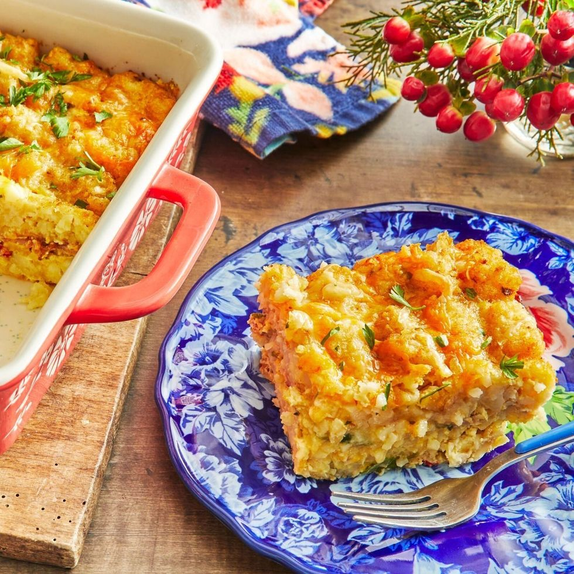
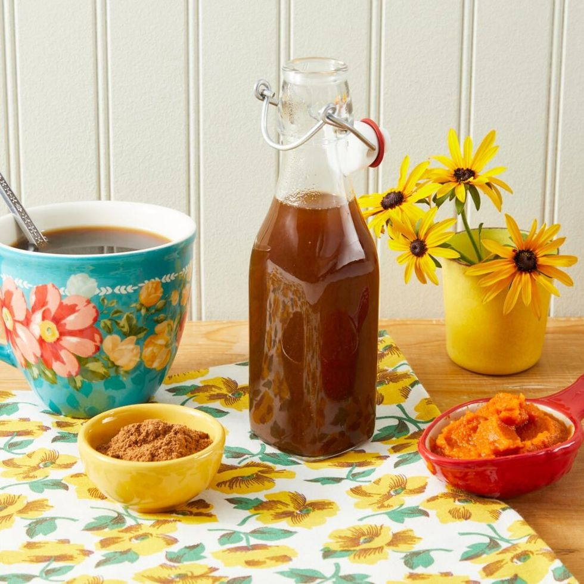
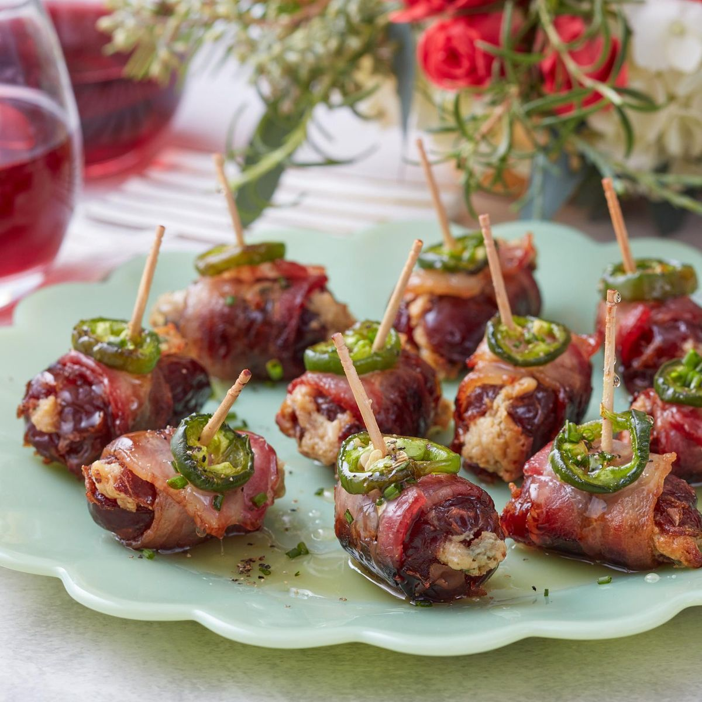
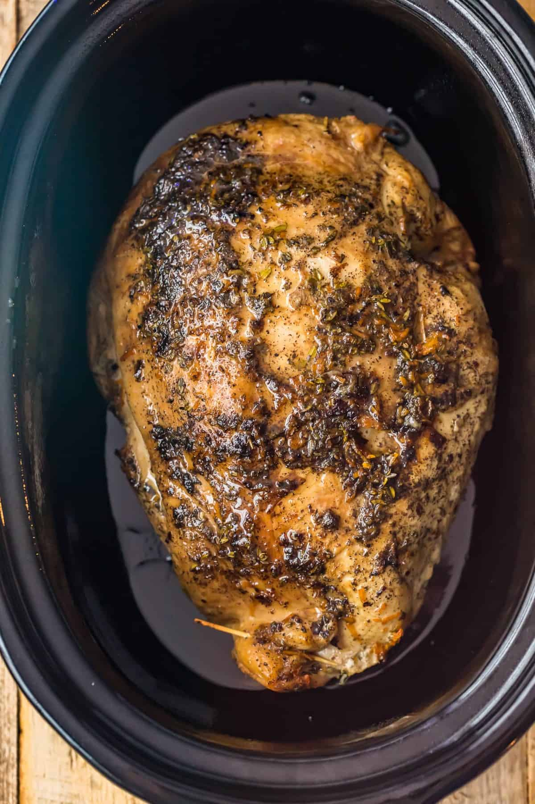
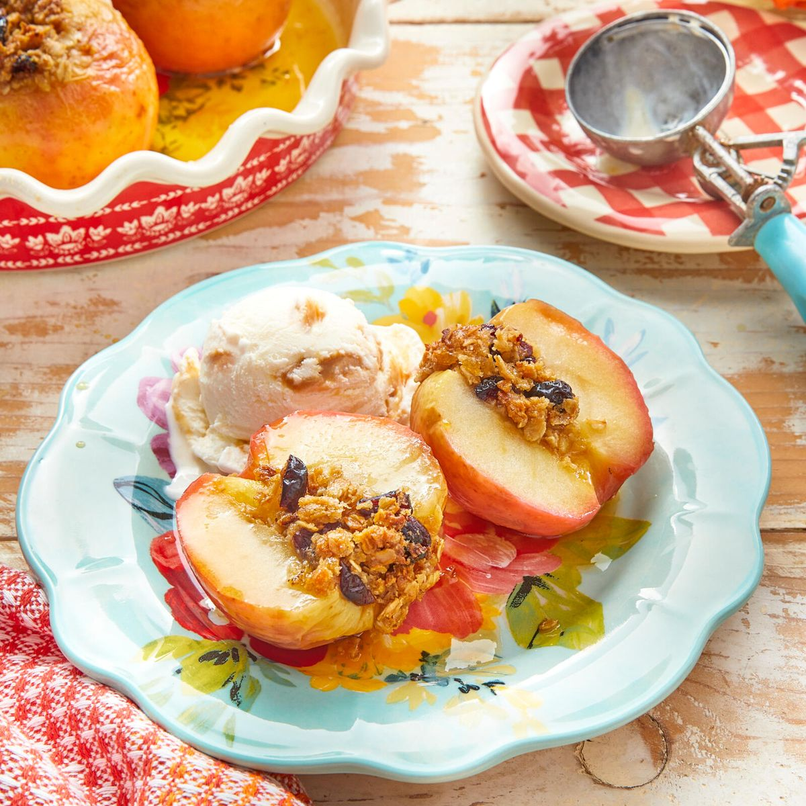

Tater Tot Breakfast Casserole
Fans of cowboy casserole or potato lovers in general, will love this tater tot breakfast casserole. Tater tots aren't just for dinner and this recipe proves it. Like mini hash brown cakes, these tots mix with other breakfast ingredients like eggs, bacon, and cheese, to make the ultimate breakfast bake. The best part? This breakfast casserole can be made the day before and refrigerated until it's time to bake. It makes Thanksgiving breakfast and Christmas brunch super simple
- 8 oz. bacon, chopped
- 32 oz. package of frozen tater tots
- 10 eggs
- 1 c. whole milk
- 1/2 c. sour cream
- 1/4 tsp. kosher salt
- 1 tsp. black pepper
- 4 scallions, chopped, white and green parts separated
- 4 oz. jar diced pimentos, drained
- 2 tbsp. chopped parsley, plus more for serving
- 2 c. shredded colby jack cheese, divided (8 oz. package)
- Heat a large skillet over medium heat. Add the bacon and cook, stirring occasionally, until the fat has rendered and the bacon is crispy, 6 to 8 minutes. Transfer the bacon to a paper towel lined plate to drain the fat and cool.
- Place half of the tater tots in a single layer in the bottom of the dish.
- Meanwhile, whisk together the eggs, milk, sour cream, salt, and pepper in a large bowl until smooth. Stir in the scallions, pimientos, and parsley. Reserve 1/2 cup of cheese and stir the remaining into the egg mixture. Stir in the cooled bacon. Pour evenly over the tater tots in the casserole dish.
- Place the remaining tater tots in a single layer over top and press gently into the egg mixture.
- To bake immediately: Sprinkle with the remaining 1/2 cup of cheese. Bake for 55 to 60 minutes, until the top is golden and the egg mixture is set in the center. Let rest for 10 minutes, then top with more parsley, and serve.
- To make ahead: Cover and refrigerate overnight, or up to 24 hours. Preheat the oven to 350°. Remove the casserole dish from the oven and let sit at room temperature for 30 minutes. Sprinkle with the remaining 1/2 cup of cheese. Bake for 55 to 60 minutes, until the top is golden and the egg mixture is set in the center. Let rest for 10 minutes, then top with more parsley and serve.
Tip: To bake immediately, it's best to thaw the tater tots before assembling the casserole. To thaw, let the bag sit in the refrigerator overnight, or at room temperature for about 2 hours

Pumpkin Spice Syrup
Pumpkin spice latte drinkers, rejoice! With this homemade pumpkin spice syrup, your favorite seasonal treat is now easier than ever to make. Brown sugar gives the syrup a molasses flavor while pumpkin spice delivers the warm intoxicating aroma of freshly baked pie. This recipe calls for pumpkin puree for a stronger flavor. You can use canned or homemade pumpkin puree, just be sure to avoid pumpkin pie filling for this pumpkin drink. Running the syrup through a fine mesh strainer is more than sufficient, but if you're a fanatic about texture, line it with a single layer of cheesecloth for ultimate smoothness. Consider this a fall essential!
- 2/3 c. light brown sugar
- 1/2 c. granulated sugar, homemade or store bought
- 1 tbsp. pumpkin pie spice pumpkin pie spice, homemade or store bought
- 1 tsp. vanilla extract
- 1/4 c. pumpkin puree
- Place 1 cup of water in a small saucepan. Add the brown and granulated sugars, pumpkin pie spice, and vanilla extract. Place over medium-high heat and bring to a simmer, whisking occasionally. Let simmer for 2 minutes to let all of the sugar dissolve and the spice to perfume the syrup. Reduce the heat to low and whisk in the pumpkin puree until smooth (do not let boil). Remove from the heat.
- Strain the mixture through a fine mesh strainer into a storage container. Once cool, cover and refrigerate for up to 1 month.
This recipe can be stored for up to one month in the refrigerator when stored in an airtight container.

Bacon-Wrapped Dates
Bacon-wrapped dates are a classic bacon appetizer that never goes out of style! Though they were a staple of dinner parties in the '70s, the recipe is about 200 years older—an English Christmas dish called "devils on horseback" (now that's a party name). The combo of sticky-sweet date, funky blue cheese, and crispy, salty bacon is as delicious as ever. This recipe adds a jalapeño slice for kick and a final brush of honey for a glossy finish. If you don't want to use blue cheese, crumbled goat cheese or even grated sharp white cheddar would be a fine substitution (though this dish could make a blue cheese lover out of anyone). Be sure to make extra as a Christmas party appetizer, a New Year's Eve appetizer, or a snack for any special party—they'll disappear fast!
- 2 oz. cream cheese, softened
- 2/3 c. blue cheese crumbles
- 1 tbsp. thinly sliced chives, plus more for garnish
- 1/4 tsp. paprika
- 20 medjool dates, pitted (from 12 oz. package)
- 10 slices bacon (not thick-cut), halved crosswise
- 2 jalapeños, cut into 20 (1/4-inch thick) slices
- 2 tbsp. honey
- Preheat the oven to 400°. Line a rimmed baking sheet with aluminum foil and set aside.
- Stir together the blue cheese, cream cheese, chives, and paprika in a small bowl.
- Cut lengthwise down the side of each date, cutting just far enough so the date can be opened up like a book, but not all the way through the other side. Stuff each date with about 1 teaspoon of the blue cheese filling and fold date closed. Wrap each date with a bacon piece, top with a jalapeño slice and secure with a toothpick. Arrange dates on the prepared baking sheet.
- Bake dates until the bacon is rendered and beginning to crisp, 20 to 25 minutes, flipping dates once after 15 minutes. Remove from the oven and immediately drizzle the hot dates with the honey. Transfer dates to a serving platter and garnish with chives. Serve hot.
Tip: The dates can be assembled up to one day in advance and baked off just before serving. For less spice, you could use pickled jalapeño slices instead of fresh.

Thanksgiving Turkey
As the holidays roll around, there’s one thing that starts to take over my mind: how to cook the PERFECT turkey for Thanksgiving. It’s the center of the feast, and while I love all the sides, I don’t want to serve a sub-par turkey. Luckily, with a bit of time, practice, and help from those that came before me, I think I’ve finally perfected my recipe!
- Roasting Pan with Rack
- Instant Read Meat Thermometer
- Aluminum Foil
- Chef’s Knife (to carve)
- Trussing string
- Preheat the oven to 325°F.
- Then take the turkey out of the fridge, remove wrapping/packaging, and remove the giblets from inside.
- Make a turkey rub (salt & pepper, sage, thyme, garlic, rosemary), then rub it all over the surface of the turkey.
- Tuck the wings under the breast. If you are stuffing the turkey, use string to tie the drumsticks/legs together.
- Place it breast side up on a rack, inside of a roasting pan, and pour ½ cup of water into the pan.
- Create an aluminum foil tent over the turkey
- Place it in the oven and cook for about 1-1 ½ hours, then remove the aluminum foil and place the turkey back in the oven.
- Continue cooking, uncovered, for the correct length of time, according to the chart shared above (generally, add 15 minutes per pound of turkey).
- Place aluminum foil loosely over the breast once the turkey reaches the desired brownness (usually up to an hour before it’s done roasting). If needed, you can cover the whole turkey.
- Begin checking the internal temperature of the turkey an hour before it’s set to be finished, in 15 minute intervals. Temperature should reach 165°F
- Once the turkey is finished cooking in the oven, let it rest for 20-40 minutes. You can tent the aluminum foil over the pan as it rests.
- Carve it after it’s had time to rest and cool slightly.
- Slice, serve, and enjoy! Be sure to put leftovers away within 2 hours.
Turkey should not be left out at room temperature for more than 2 hours. This means that by the time it’s rested, been carved, served, and eaten, you’ll need to put it away in the refrigerator quickly after eating.

Baked Apples
There's something so special about getting your very own baked apple—maybe because no one's arguing over who got the bigger slice of pie! Baked apples check every box for an apple dessert, all in one irresistible package. A little apple cider does triple duty here: It creates steam in the oven to help the apples cook evenly, it keeps the bottoms from burning, and it reduces into a sweet, syrupy glaze for coating the apples once they're tender and golden. Keep this apple recipe as a back-pocket dessert for last-minute company, or any time you crave a fall dessert (and don't want to share!).
- 6 tbsp. unsalted butter, diced and softened
- 1/2 c. old fashioned oats
- 6 tbsp. light brown sugar
- 1/4 c. dried cranberries
- 1 tsp. cinnamon
- 1/4 tsp. kosher salt
- 4 medium honeycrisp or cortlandt apples
- 1/4 c. apple cider
- 2 tbsp. honey
- Preheat the oven to 375°. Combine the butter, oats, sugar, cranberries, cinnamon, and salt with your fingertips in a medium bowl until well combined. Set aside.
- Using a paring knife, cut out the core and stem of each apple, leaving the bottom about 1/2-inch of the apple intact. Using a small spoon or grapefruit spoon, scoop out any remaining core and seeds to form about a 3 tablespoons cavity in each apple. Stuff each apple with an equal amount of the oat mixture.
- Pour the apple cider and honey into the bottom of a pie plate; whisk to combine. Arrange the apples, crumb side up, in the pie plate. Bake until the apples are tender when pierced with a fork, 30 to 40 minutes, basting the sides of the apples (avoiding oat filling) every 15 minutes with apple cider mixture from the bottom of the pie plate. Serve warm with big scoops of ice cream.
Double this recipe and bake in a 13-by-9-inch casserole dish, if you're preparing for a bigger crowd!